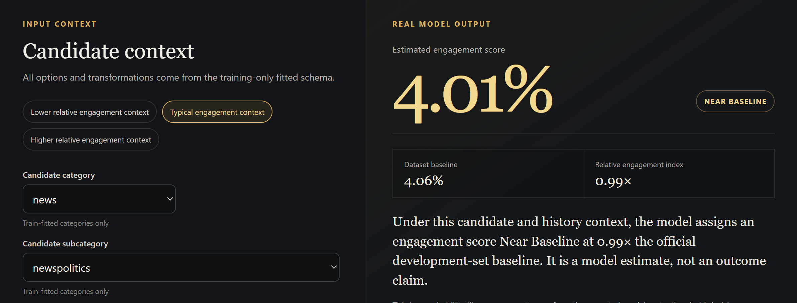

Predicted Engagement Score
A browser-calculated model estimate, not a guarantee of an outcome.
03 • EXPLORE PREDICTION
Real data. Explainable
recommendation intelligence.
This capstone model demonstrates the recommendation-intelligence layer of STRONGR OS using real public interaction data. Adjust the context, see how the score responds, and understand the factors influencing the result.
OPEN LIVE STRONGR OS CAPSTONE MODELPARITY EVIDENCE
maximum sklearn/browser difference
WHAT THE LIVE MODEL SHOWS
A browser-calculated model estimate, not a guarantee of an outcome.
Context for the score against the official development positive prevalence.
A relative comparison, not a classification threshold or business rule.
Active model arithmetic and boundaries—not causal explanations.
ACCEPTED INTERFACE EVIDENCE
